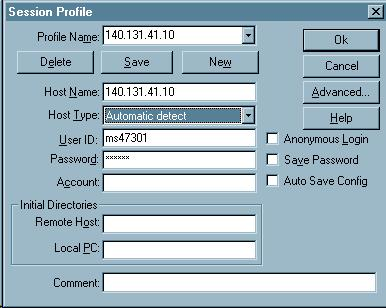
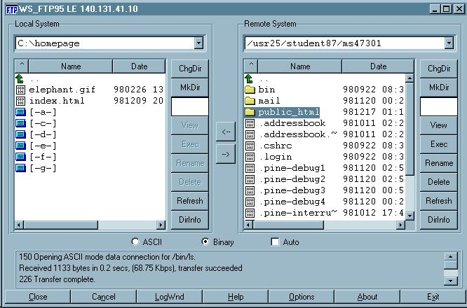

製作個人網頁web page，home page
製作個人網頁（web page，home page）基本步驟：
一、製做存放網頁目錄
- 開啟檔案管理員：「開啟」，「程式集」，「檔案管理員」
- 點選 (c:)，選取「檔案」，「開啟新檔案」，「資料夾」更改為自己的名字（如homapage）
二、編輯網頁內容
- 抓取相關圖形檔
- 進入IE4.0，流覽某一站
- 游標至欲抓取圖形上，按滑鼠右鍵
- 點選「另存圖片」，存該圖片至自己目錄中
- 開啟記事本（Notepad）以設計網頁
- 點選「開始」，「程式集」，「附屬應用程式」，「記事本」
- 調整「記事本」之視窗大小
- 編輯網頁內容，如下
<html>
<title>民生國中首頁</title>
<body>
<h1>歡迎參觀民生國中首頁</h1>
<center><img src="elephant.gif></center>
<font color="red">聯絡電話：3113040</font>
<body>
</html>
三、將網頁存檔
點選選單「檔案」，「儲存檔案」，出現存檔交談窗；先點選目錄（ex：homepage），在「檔名輸入盒」輸入「index.html」
四、開啟IE4.0檢查index.html是否成功
- 快按IE4.0圖案二次，調整IE視窗大小
- 點選「檔案」，「開始」，出現交談窗時按「瀏覽」命令紐，接著出現選檔之視窗，選取目錄（homepage）及其中index.html檔，按enter
- 檢查index.html是否符合需求，不符時重新進入步驟三之3及4，修正網頁內容
五、開啟WS_FTP將index.html送入個人帳號中
- 快按WS_FTP捷徑圖示兩次
- 出現連線（session）視窗(如下圖一)，在host
name中輸入140.131.41.10，在user ID輸入「帳號」，在PASSWD中輸入「密碼」，按「OK」紐
- 登錄不成功時按「close」紐，再按「connect」紐又進入步驟2之視窗
- 在local system（本地端），更改目錄（ex：homepage）
- 點選index.html及相關圖形檔
- 在Remote system（遠端主機），點選「MKDIR」命令紐，輸入public_html，以製作存放首頁之目錄
- 點選public_html以切換至該目錄(如下圖二)
- 傳送：按傳送「→」紐，以將PC端檔案傳送至主機端public_html目錄下
- 查看目錄是否傳送成功
圖一:

圖二:

六、開啟IE查看自己的homepage，在地址中輸入：140.131.41.10/~ms47301